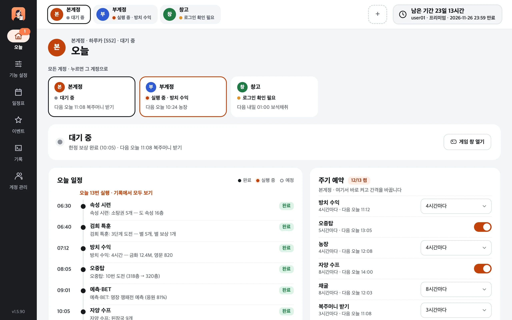
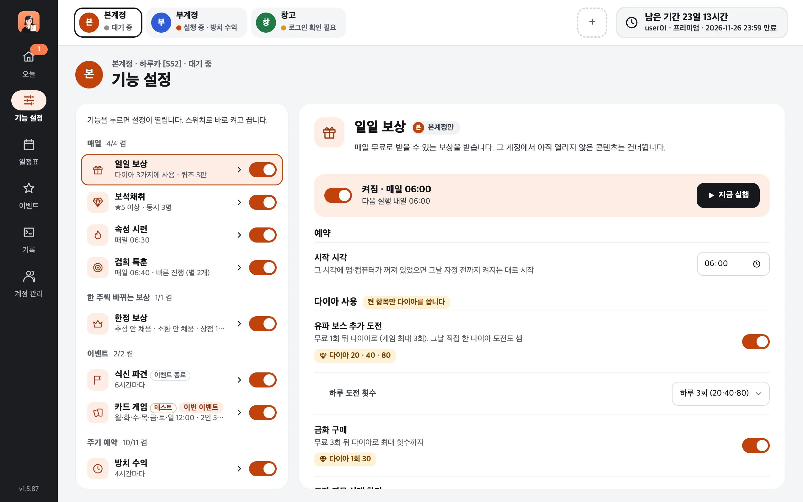
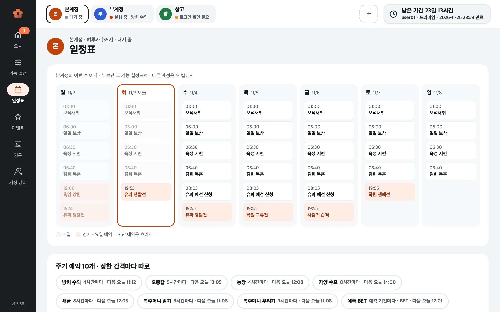
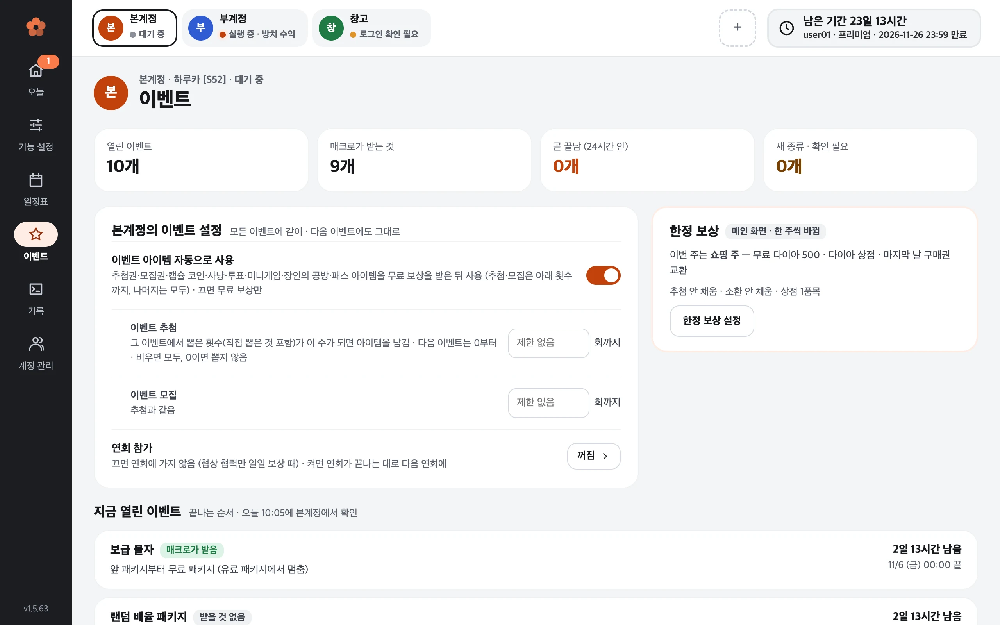
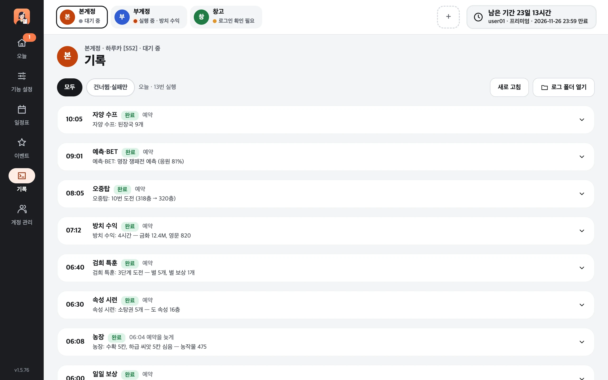
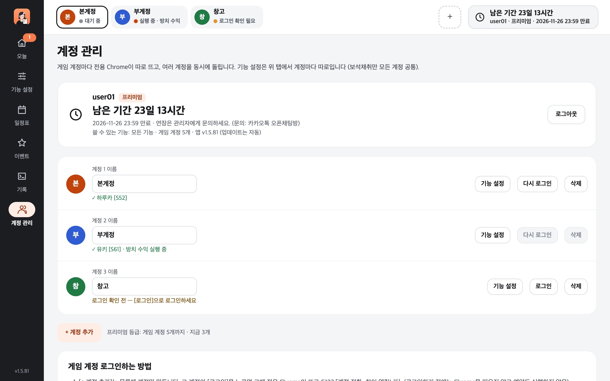

켜 두면 예약대로,
백화요란 하루 일과를 자동으로
일일 보상과 보석채취, 방치 수익·오중탑 같은 주기 보상, 유파 쟁탈전 같은 경기까지. 계정마다 정한 시각에 매크로가 알아서 진행하고, 무엇을 했는지 한눈에 보여 줍니다.

이런 점이 편해요
한 번 설정하면 매일 신경 쓸 일이 줄어듭니다
매크로 전용 Chrome 창에서 게임을 직접 조작합니다. 평소 쓰는 Chrome과 분리되어 있고, 창을 닫아도 트레이(맥은 메뉴바)에 남아 예약을 지킵니다.
예약대로 알아서
매일 06:00 일일 보상, 01:00 보석채취, 4시간마다 방치 수익처럼 시각과 간격만 정하면 됩니다. 컴퓨터가 꺼져 있던 동안 놓친 예약은 켜지는 대로 이어서 합니다.
계정마다 따로
게임 계정을 여러 개 등록하면 계정마다 전용 Chrome으로 동시에 돌아갑니다. 위쪽 탭으로 계정을 고르고, 같은 설정을 [다른 계정에도 적용]으로 한 번에 복사합니다.
한 일이 한눈에
「오늘」 화면에 오늘 한 일과 다음 예약이, 「기록」에 실행마다 결과 한 줄이 남습니다. 다이아는 설정에서 켠 항목에만 씁니다.
기능
매일 하는 일부터 주말 경기까지
기능마다 켜고 끌 수 있고, 그 계정에서 아직 열리지 않은 콘텐츠는 자동으로 건너뜁니다. 자세한 동작과 설정은 기능 안내에 있습니다.
매일
하루 한 번 정한 시각에출석·임무·메일·무료 패키지·이벤트 무료 보상, 도장 연무·퀴즈·식신 난투, 다이아 위탁 농장 자동 배치, 속성 시련·특훈 도전
화면 둘러보기
왼쪽 메뉴 6개면 충분합니다
계정마다 화면은 같고 설정은 따로입니다. 위쪽 탭에서 계정을 고르면 그 계정의 설정과 기록으로 바뀝니다.
모든 계정의 지금 상태와 다음 예약, 고른 계정의 오늘 일정(한 일 · 지금 · 다음 예약). 주기 예약은 여기서 바로 켜고 간격을 바꿉니다.

왼쪽 목록의 스위치로 바로 켜고 끄고, 누르면 오른쪽에 그 기능의 설정이 열립니다. [지금 실행]으로 바로 돌리고, [다른 계정에도 적용]으로 설정을 복사합니다.

이번 주 요일별 예약(매일 · 경기 · 요일 예약)과 켠 주기 예약을 한눈에. 누르면 그 기능 설정으로 갑니다.

지금 열린 이벤트와 남은 시간, 매크로가 그 무료 보상을 받는지. 매크로가 아직 모르는 새 이벤트는 「확인 필요」로 표시되고, 이벤트 기능에는 「이번 이벤트」·「이벤트 종료」 라벨이 붙습니다.

오늘 실행한 것을 실행마다 한 줄(완료 · 건너뜀 · 실패와 결과)로. 누르면 전체 로그, [건너뜀·실패만]으로 거를 수 있습니다.

매크로 로그인 아이디·등급·남은 기간, 게임 계정 목록(이름 바꾸기 · 게임 로그인 · 삭제)과 [+ 계정 추가].
등급
아이디 등급에 따라 쓸 수 있는 기능
계정 목록·설정·게임 로그인은 등급이 바뀌어도 그대로 남습니다. 남은 이용 기간은 앱의 모든 화면 위쪽 오른쪽에 보입니다.
| 등급 | 게임 계정 | 쓸 수 있는 기능 |
|---|---|---|
| 게스트 (로그인 안 함) | 1개 | 보석채취만 (다른 기능은 화면만 볼 수 있음) |
| 일반 | 1개 | 유파 전투(유파 쟁탈전·학원 쟁패전·학원 교류전·사검귀 습격)를 뺀 모든 기능 |
| 프리미엄 | 5개 | 모든 기능 |
아이디·연장 문의는 관리자에게 해 주세요.
자주 묻는 질문
궁금한 점
컴퓨터를 계속 켜 둬야 하나요?
예약 시각에 앱이 켜져 있어야 실행됩니다. 앱이나 컴퓨터가 꺼져 있었으면(절전 포함) 켜지는 대로 놓친 예약을 이어서 합니다 — 보석채취·일일 보상·속성 시련·검희 특훈은 그날 자정 전까지, 흑암 강림은 다음 예약일 전까지.
유파 쟁탈전 같은 경기는 경기 시각에만 할 수 있으니 그 시간에는 절전되지 않게 해 주세요.
다이아를 마음대로 쓰지 않나요?
다이아를 쓰는 항목(유파 보스 추가 도전, 금화 구매, 일일 상점, 한정 보상 상점, 경기 이동 가속 등)은 설정 화면에 다이아 표시가 붙어 있고, 켠 항목에만 씁니다. 현금 결제 패키지는 사지 않습니다.
휴대폰으로 같은 계정에 접속해도 되나요?
다른 곳에서 같은 게임 계정으로 접속하면 매크로 쪽 게임이 끊깁니다. 매크로는 바로 다시 접속하지 않고 30분을 기다렸다가 다시 접속합니다(경기 중에는 바로 다시 접속). 더 일찍 이어 가려면 매크로 Chrome 게임 창에서 [확인]을 누르세요.
업데이트는 어떻게 하나요?
앱이 1시간마다 새 버전을 확인해 스스로 업데이트합니다. 실행 중인 기능이 끝난 뒤 잠깐 꺼졌다 다시 켜지고, 경기 15분 전부터 경기가 끝날 때까지는 업데이트하지 않습니다. 설정과 게임 로그인은 그대로 유지됩니다.
게임 창을 봐도 되나요?
매크로 전용 Chrome 창은 다른 창에 가려져 있어도 동작하고, 최소화되어 있으면 자동으로 되돌립니다. 매크로가 도는 동안 그 창을 직접 누르면 매크로 조작과 겹칠 수 있으니 지켜보기만 해 주세요.